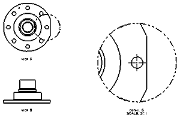
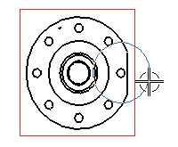
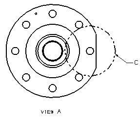
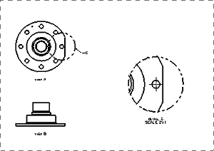

Remove the isometric view and add a detail view
-
Remove (delete) the Isometric view from the drawing.

The last view you will need is a close up detail of the cut-off edge of the flange.
-
Add a detail view of the right side area of the TOP view. It should:
-
Have a circular border.
-
Be 3 times the scale of the TOP view.
-
Include appropriate centerlines, a view label, and a scale label. The label for the parent view should use the “embedded style.”
-
Be centered on the hole next to the cutoff edge.
-
Have a border just large enough to include the straight portion of this flange.
-
Be placed in the center of the drawing sheet.


-
-
Change the detail view label on the parent view from Embedded to Label.
If you need to, adjust the new label and its leader.

-
Reduce the scale of the detail view so that it is two times the size of its parent view.
